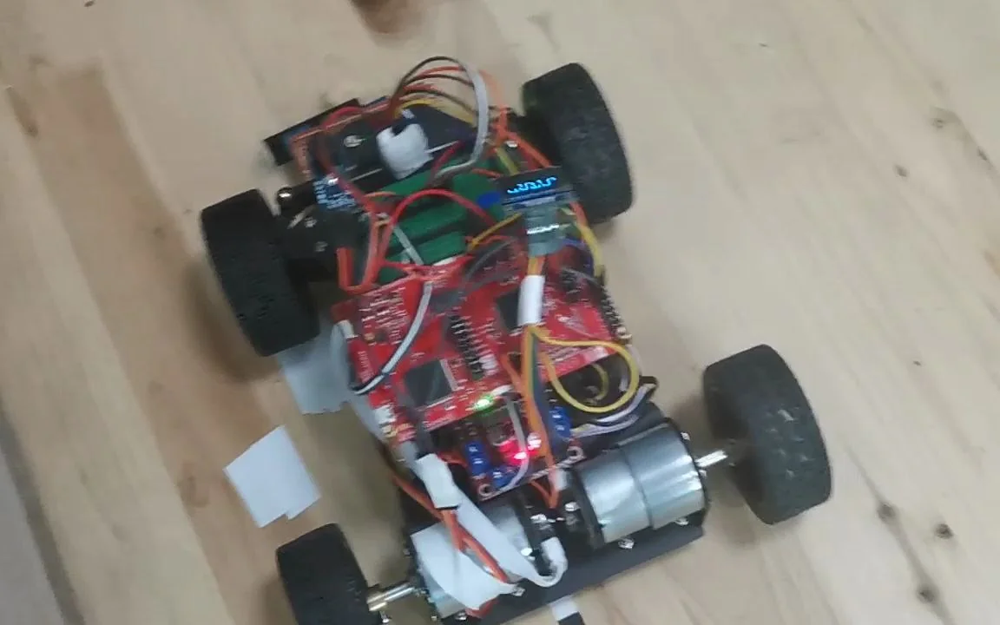

坡道行驶电动车
以车载传感器、控制器和电池供电模块搭建自主行驶小车，在平地及坡道上沿标记线行驶。
- 个人职责
- 校园独立开发
- 验证情况
- 平地与坡道实车测试

项目整体架构图
小车感知与运动
车载传感器读取平地和坡道上的标记线
标记线反馈
TI 微控制器运行循迹与停靠逻辑
运动控制
电动车底盘调整行驶方向并执行停车
供电关系
车载电池为自主行驶提供电源
车载供电
控制与执行系统运行车载感知和底盘控制
循迹与停靠控制关系图
通过标记线反馈维持循迹，进入指定区域后切换到停车动作。
行驶与停车判断
标记线传感器反馈当前循迹情况
循迹反馈
循迹与停靠逻辑选择继续循迹或停车
动作输出
底盘执行调整行驶方向或停止
软件模块设计
- 标记线感知
- 由车载传感器提供地面标记线反馈。
- 循迹控制
- 根据标记线反馈调整行驶方向，覆盖平地和坡道场景。
- 停靠控制
- 小车驶入指定停靠区域后执行停车。
硬件通信接口设计
| 设备或端点 | 通信接口 | 信号或数据 |
|---|---|---|
| 车载传感器 → TI 微控制器 | 传感器反馈输入 | 地面标记线反馈 |
| TI 微控制器 → 底盘驱动 | 运动控制输出 | 行驶方向调整和停车 |
| 车载电池 → 小车系统 | 电源连接 | 控制与执行系统供电 |
关键功能与技术说明
- 循迹到停车的动作切换
- 行驶时控制器持续根据线路反馈调整方向。进入停靠区域后执行停车，在平地和坡道场景中分别检验循迹与停靠效果。